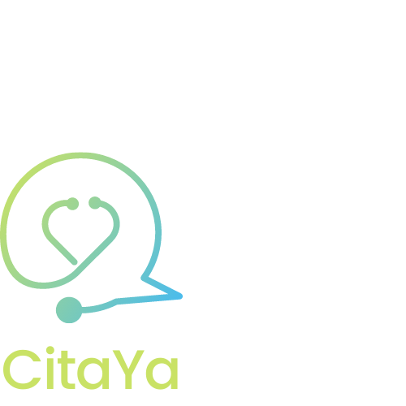

<div class="main-content">
    <div class="container-fluid">
        <div class="row">
            <div class="dashboard-user-image">
                
            </div>
        </div>
        <div class="row">
            <div class="dashboard-user-description">
                <div class="col-lg-8 col-md-8 col-sm-10">
                    <h5>¡Hola!</h5>
                    <p>En este espacio podrás realizar todo tus trámites relacionados con solicitud de citas médicas y
                        ver las citas que ya tienes programadas.
                    </p>
                    <p> Puedes acceder a dichos servicios desde las opciones
                        ubicadas en la parte lateral izquierda de la página.
                    </p>
                    <br>
                </div>
            </div>
        </div>
        <div class="card-body">
            <div class="table-responsive">
              <table class="table table-hover">
                <thead class="">
                  <th>Servicio</th>
                  <th>Fecha</th>
                  <th>Hora</th>
                  <th>Acciones</th>
                </thead>
                <tbody>
                  <tr *ngFor="let userAppointment of userAppointmentsList">
                    <td>
                      {{ userAppointment.serviceType }}
                      </td>
                    <td>
                      {{ userAppointment.date }}
                    </td>
                    <td>
                      {{ userAppointment.hour }}
                    </td>
                    <td>
                      <div class="action-icon-table">
                        <i class="material-icons">file_copy</i>
                        <i class="material-icons">assignment_turned_in</i>
                      </div>
                    </td>
                  </tr>
                </tbody>
              </table>
            </div>
          </div>
    </div>
</div>